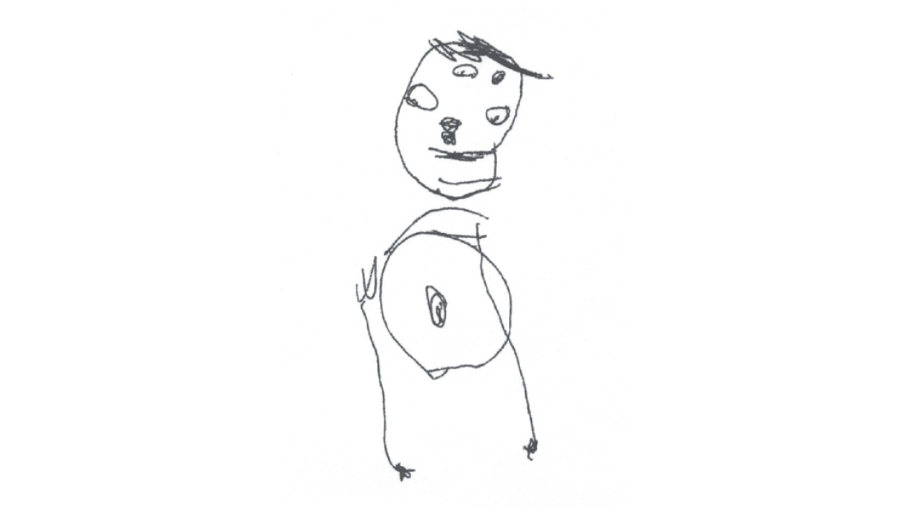
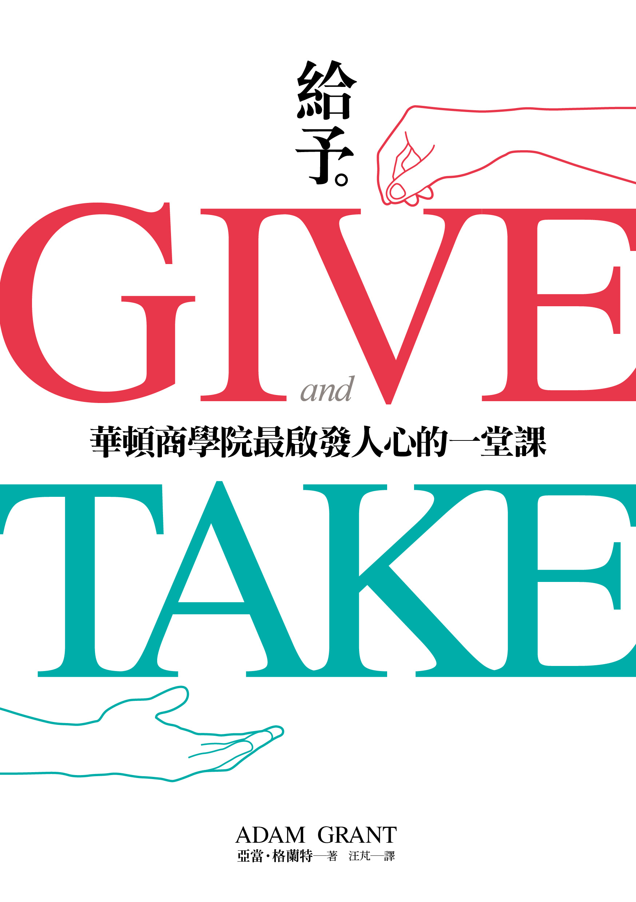
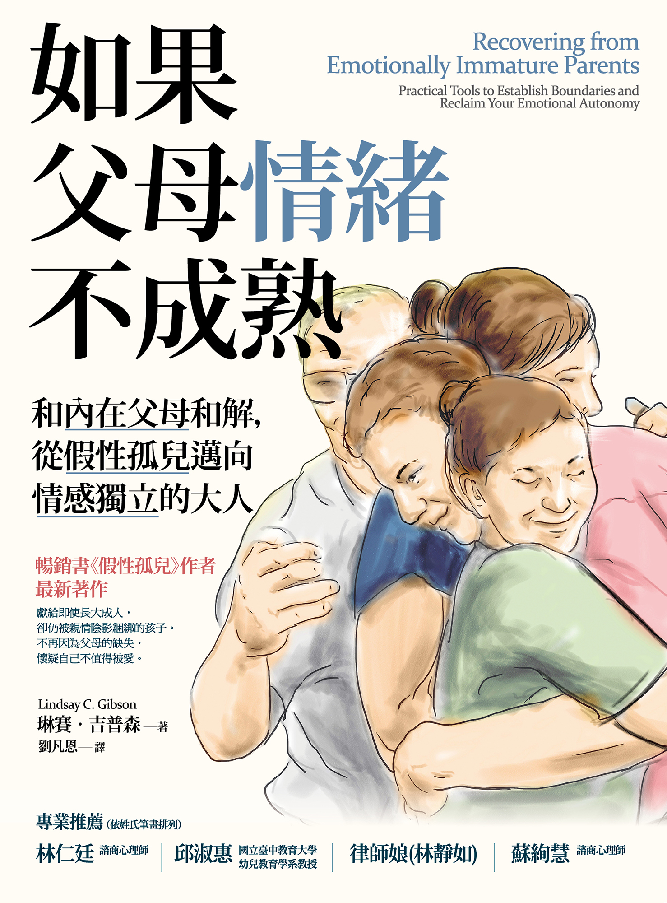

迷走神經凍結與討好反應
身處權力嚴重傾斜的場合，人體背側迷走神經會迅速觸發「凍結反應（Freeze）」或「討好反應（Fawn）」。大腦前額葉皮質血液暫時被抽離，理智思考受阻，容易本能地點頭、道歉或接受不合理要求。這是個體面對強大威脅時的自我保護本能，與意志力強弱無關。
當場退讓只是權力失衡的表象，深夜反覆重播與自我歸因，才是持續吞噬心力的核心機制。
融合史丹佛組織權力學、認知神經科學與系統分化理論，為習慣退讓者建立不可撼動的心智護城河。
在職場高壓會議與過往家庭生活中，面對強勢者時習慣妥協退讓，獨處時卻反覆重播自責。
當場妥協與事後反芻，源於神經防禦機制的代償錯位，與個人意志力強弱無涉。
身處權力嚴重傾斜的場合，人體背側迷走神經會迅速觸發「凍結反應（Freeze）」或「討好反應（Fawn）」。大腦前額葉皮質血液暫時被抽離，理智思考受阻，容易本能地點頭、道歉或接受不合理要求。這是個體面對強大威脅時的自我保護本能，與意志力強弱無關。
離開衝突現場後，神經反芻機制正式啟動。伊森·克洛斯（Ethan Kross）研究證實：單憑邏輯思考平復情緒衝擊，極易陷入反芻陷阱。大腦以極快語速反覆播放：「剛剛為何沒有反駁？」「對方是否認為我軟弱？」「為何我又退讓了？」。對外部不公的壓抑情緒，最終全部轉化為對自我的嚴厲審訊與反覆消耗。
傑夫瑞·菲佛（Jeffrey Pfeffer）指出，習慣妥協者常抱持「公正世界假說（Just-World Fallacy）」，深信只要工作成果踏實、為人誠懇，自然會獲得公平對待。若將權力視為負面手段並刻意迴避，將直接失去話語權，任由組織規則被強勢索取者單向決定。
琳賽·吉普森（Lindsay Gibson）與周慕姿共同指出：童年時期若家庭照護者情緒不穩定、易怒或冷漠，敏銳的孩子往往被迫承擔照顧大人情緒的角色。為了維持安全感，孩子內化了「唯有表現優秀、懂事退讓，才配被愛」的信條，並在成年後將此模式完整複製到職場關係中。
常規建議往往流於表面激勵，忽略了真實權力場域中的神經過載與資源博弈。
我們對直覺式的閱讀路徑展開審查與重構，確立先止血抗耗、後看清規則、再實戰防禦、終解除束縛的四階進程。
針對常見直覺建議中隱藏的二次傷害風險，建立清晰因果防護。
當當事人正處於職場高壓被剝削、夜間反芻失眠的狀態時，神經系統早已超載。此時強行挖掘童年創傷，容易引發習得性無助與更深層的自我懷疑，甚至讓身心狀態進一步惡化。
第一步必須先建立心理防線。先讀《強大內心的自我對話習慣》掌握第三人稱抽離技術與時間透視法，搭配《鈍感力》的神經鈍化練習，在數日內阻斷夜間反芻迴路，讓皮質醇平穩下降，恢復理性決策能量。
此舉將使當事人持續以道德幻想面對現實利益爭端，隨時承受被邊緣化或被掠奪的代價，並忽視了葛倫費德在《懂權力》中強調的角色承擔價值。
菲佛負責瓦解不切實際的幻想，看清組織資源分配與籌碼運作機制；葛倫費德則提供角色權力視角，說明權力實為承擔責任所需的資源與工具，而非壓迫他人的特權。配合格蘭特《給予》確立明確界限。
面對自戀型主管或惡意索取者，主動表露受傷與委屈容易被對方視為破綻，成為後續情感施壓與責任轉嫁的施力點。
借鏡吉普森的客觀觀察者立場，放棄對強勢者的情感期待；對話完全聚焦於客觀事實、交付成果與責任邊界，將《關鍵對話》的對比確認法作為防禦工具，堅守專業底線。
| 演化階梯 | 階段核心目標 | 主力攻堅書目 | 達成檢核指標 |
|---|---|---|---|
| 階梯 I 止血抗耗 Acute Hemostasis | 建立心理防線，中斷大腦反芻對話，恢復睡眠與身心平靜。 | 《強大內心的自我對話習慣》 《鈍感力》 支援：《自我慈悲》 |
遭遇衝突後，反芻重播時長縮短至 30 分鐘以內，夜間睡眠不受干擾。 |
| 階梯 II 權力醒悟 Power Awakening | 打破好人道德潔癖與公正世界迷思，掌握角色權力槓桿與防索取界線。 | 《懂權力，在每個角色上發光》 《精進權力》 《給予》 支援：《被討厭的勇氣》 |
能坦然爭取自身合法利益與工作資源，不再產生自責或自私感。 |
| 階梯 III 當下防禦 In-Situ Defense | 面對高壓衝突時不再僵住，能冷靜劃界並核對客觀事實。 | 《如果父母情緒不成熟》 支援：《關鍵對話》《非暴力溝通》 |
現場被臨時加碼或不合理甩鍋時，能在數秒內定錨並給出邊界回應。 |
| 階梯 IV 源頭解咒 Root Liberation | 梳理童年假性孤兒與討好模式，放下過度努力，確立內在主權。 | 《過度努力》 支援：《為什麼家會傷人》 |
不再藉由過度承擔與追求完美來確認存在價值，接納自主節奏。 |
許多習慣退讓與內耗的人遲遲無法開卷，往往源於精力枯竭與防禦性自責。
運用心理學機制卸下防禦，把閱讀轉化為溫和奪回自我主權的日常微習慣。
妳不需要正襟危坐從第一頁讀到最後一頁。把這些書當作擺在辦公桌與床頭的「急救醫藥箱」：今天遇到被過度索取時，直接翻閱《給予》第 6 章〈保護型給予者：如何避免被索取者耗盡〉；深夜反芻自責時，直接點開《強大內心的自我對話習慣》第 2 章〈心理抽離的工具箱：從暴風雨中心退後一步〉。在 Readify AI 裡隨手點開一個章節，就是在為自己奪回一寸主權。
當主管當眾否定妳的方案，為什麼保持微笑或立刻反駁都是錯的？葛倫費德教授在《懂權力》第 2 章〈高姿態的權力〉與第 8 章〈力抗霸凌，擺脫受害者角色〉中，詳細拆解了重掌主導權的肢體定錨法，能讓強勢者在 10 秒內本能收回侵略性。在電子書目錄中點選第八章，即可取得完整的防禦對話範本。
翻閱原書旨在為過去的自我防禦本能升級更成熟的應對工具，全然接納妳一路走來的生存智慧。妳的退讓與敏感，曾保護妳度過童年與動盪環境；如今翻開原書，是為了讓這份敏銳轉化為保護自己的堅實防線，平靜而堅定地立足。
只要妳不主動理解權力運作的客觀規律，妳就是把支配自己情緒與前途的權利，毫無保留地拱手送給職場與生活中的掠奪者。翻開《精進權力》，此舉實為成年人保護自身尊嚴與勞動成果最清醒的自衛，絕非功利算計。
建立清晰的行為公式：如果今晚大腦又開始重播白天的會議衝突，那麼我就打開 Readify AI，點開《強大內心的自我對話習慣》第 2 章〈工具箱〉中的第三人稱抽離練習，跟隨內文做一次思維重置，以客觀平靜替代孤獨自責。
結合史丹佛與華頓商學院的組織權力洞察，以及認知神經科學與臨床心理學。
全面換裝官方真實正版書封，每本書均配備痛點剖析、破局心法、高光金句與專屬長頁。






結合上一輪討論的核心工具書，明確界定其「適用戰場」與「禁用警訊」，避免誤用良方反而成為溝通陷阱。
利害關係高、雙方情緒緊繃但具有共同利益的商業或職場協商。運用對比說明法（Contrasting）維持對話安全感。
對方處於極端自戀、惡意霸凌或完全不講理的狀態時，切勿單向試圖說服對方，否則只會被拖入泥潭。
將情緒提煉為「觀察、感受、需要、請求」，向具備善意的合作者提出精確具體的行動指標。
嚴禁對惡意掠奪者暴露內心深層的脆弱感受，否則容易成為對方施壓與操控的切入點。
當內心產生嚴苛的自我評判與罪惡感時，以對待摯友的溫和視角取代批判，中斷負面內耗。
不可將自我慈悲作為逃避現實職場問題的藉口；必須與客觀的邊界防守及權力分析結合使用。
看清成年後在職場中面對權威時的過度服從與恐懼，溯源其在原生家庭投射中的心理機制。
避免在身心極度疲憊時將所有問題歸咎於家庭，陷入受害者心態；重在認清模式並建立當下邊界。
執行阿德勒心理學的「課題分離」：對方的評價是對方的課題，守護底線是自己的課題。
課題分離並非盲目孤立或拒絕合作；在組織協作中仍須維持專業成果的交付與必要結盟。
勾選你在日常人際或職場中符合的典型反應，系統將精確診斷你的核心卡點並計算最優起手書目。
檢測指標（請勾選最符合你現狀的項目，可多選）：
勾選項目將實時計算，給予針對性行動處方。
當被強勢者突然施壓時，記住這六套不需要臨場雄辯、卻能固守邊界的實戰指南。
每條處方均標註專屬理論依據與原書章節出處，方便按圖索驥翻閱深研。
面對突然塞過來的額外任務，切忌直接答應或憤怒拒絕，運用菲佛的「資源依賴談判法則」將選擇權交還對方。
當對方試圖用受害者姿態或怒氣引發妳的內疚感時，啟動吉普森的「客觀觀察者非情感介入法」，絕不承接對方的情緒。
遇到習慣性找妳收尾或免費索取勞動成果的搭便車者，執行格蘭特的「條件式互惠（Tit-for-Tat）」防禦策略。
在會議中突然遭遇人身貶抑或強勢發難，運用葛倫費德的「高姿態冷靜定調法」，不辯解、不道歉，維持專業節奏。
遭遇背後的酸言酸語或刻薄評語時，啟動渡邊淳一的「防水雨衣效應」：評價如同水珠，滑過雨衣即可，絕不滲透至自律神經。
當腦中失控重播白天衝突、心跳加速失眠時，執行克洛斯實驗室證實有效的「第三人稱自語與時間透視法」。
精選 7 部完整正規 EPUB 電子書，均已完成校驗。
全面推薦搭配專用 AI 伴讀工具 Readify AI，享受深層對話與有聲導讀。